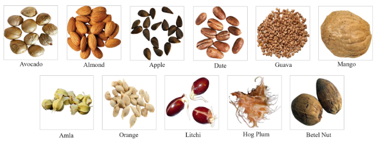
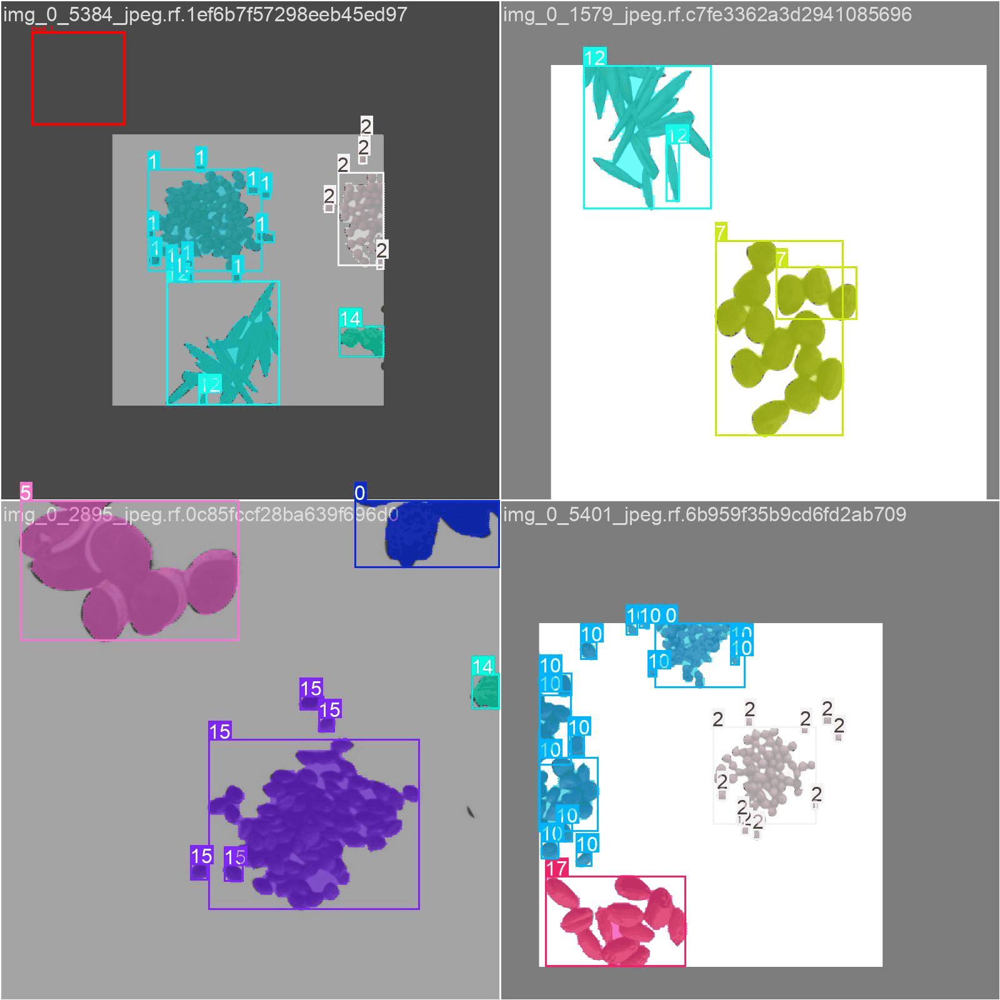
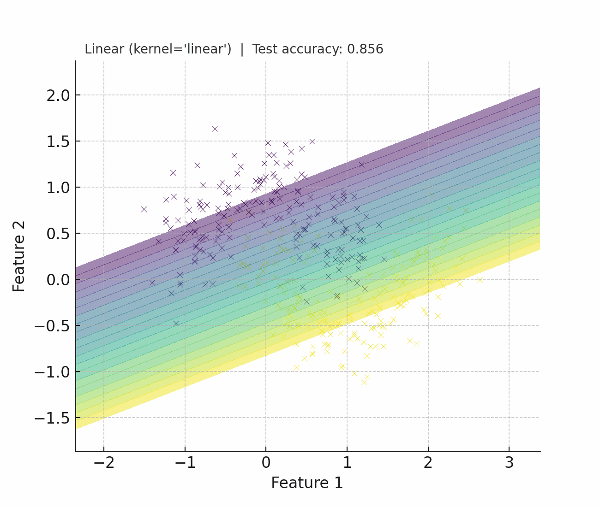
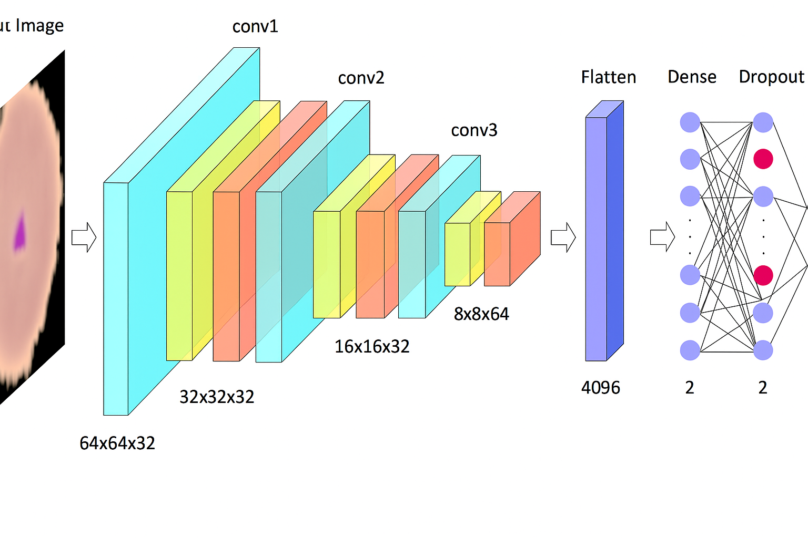
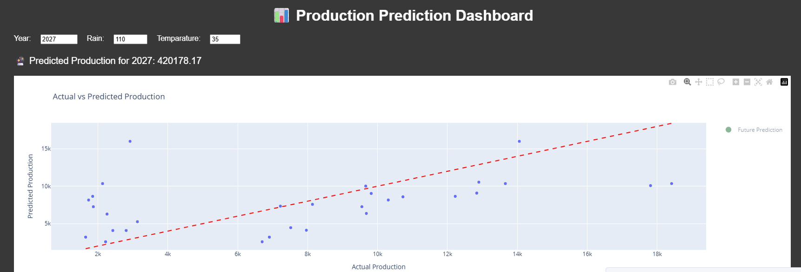
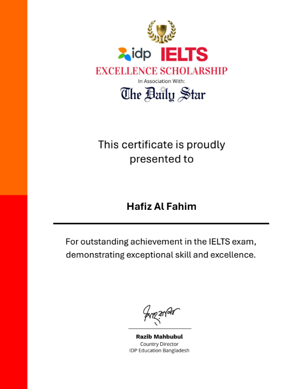

<!DOCTYPE html>
<html lang="en">
<head>
  <meta charset="UTF-8" />
  <meta name="viewport" content="width=device-width, initial-scale=1.0"/>
  <title>Hafiz's | Portfolio</title>
  <link rel="stylesheet" href="style.css" />
  <!-- Font Awesome for icons -->
<link rel="stylesheet" href="https://cdnjs.cloudflare.com/ajax/libs/font-awesome/6.4.0/css/all.min.css">

<!-- Academicons for ResearchGate (if needed) -->
<link rel="stylesheet" href="https://cdnjs.cloudflare.com/ajax/libs/academicons/1.9.1/css/academicons.min.css">
<link rel="stylesheet" href="projects.css">

</head>
<body>

  <!-- Sidebar -->
  <aside class="sidebar">
    <div>
      <div class="logo">Hafiz Al<br>Fahim</div>
      <ul class="nav-links">
  <li><a href="#about"><i class="fas fa-user"></i>About</a></li>
  <li><a href="#education"><i class="fas fa-graduation-cap"></i>Education</a></li>
  <li><a href="#research"><i class="fas fa-flask"></i>Research</a></li>
  <li><a href="#publications"><i class="fas fa-book-open"></i>Publications</a></li>
  <li><a href="#projects"><i class="fas fa-code"></i>Projects</a></li>
  <li><a href="#experience"><i class="fas fa-briefcase"></i>Experience</a></li>
  <li><a href="#News"><i class="fas fa-newspaper"></i>News</a></li>
  <li><a href="#extra-curricular"><i class="fas fa-users"></i>Activities</a></li>
  <li><a href="#contact"><i class="fas fa-envelope"></i>Contact</a></li>
</ul>

    <!-- </div>
    <div class="toggle-button">
      <button id="toggleSidebar">&lsaquo;</button>
    </div> -->
  </aside>

  <!-- Main Content -->
  <main class="main-content">
    <section class="hero" id="hero">
      <h1>Hello, I'm <span>Hafiz Al Fahim</span></h1>
      <p class="typewriter">Research Enthusiast | Aspiring Data Scientist</p>
    </section>

    <section id="about" class="section about-section">
  <h2>About Me</h2>
  <div class="profile-container">
  <div class="profile-border">
    
  </div>
</div>

      <p>I'm a Computer Science graduate with a strong focus on artificial intelligence, machine learning, and statistical analysis, 
        passionate about applying AI to real-world challenges in agriculture, healthcare, and social systems. 
        In Spring 2023, I worked as a Research Assistant under Prof. Monzur Morshed, where I focused on classifying 
        and predicting agricultural seed data related to Bangladesh’s crop ecosystem. This research led to the presentation 
        of my paper "Crop Yield Prediction using Machine Learning" at ICONC’S 2023 in Turkey. I also co-authored a study on seed 
        classification and social health, published in Springer Nature, reflecting my dedication to impactful, data-driven AI research 
        in healthcare, social good, and agriculture.</p><br>

        <p><b>Research Areas:</b> Machine Learning, Deep Learning, Computer Vision, Statistical Analylis, AI for Social Good</p>
        <p><b>Research Topic:</b> Agricutural AI, Agricutural Imaging, Medical Imaging, AI-Driven Social Network Analysis</p><br>

         <a href="https://drive.google.com/file/d/1Dsy55Tbf1RKeIjIv56QQNc1k7lc355Ej/view?usp=sharing" class="read-more" target="_blank">CV</a>
    </div>
  </div>
</section>


    <section id="education" class="section">
      <h2>Education</h2>
      <p><b>Bachelor of Science in Computer Science & Engineering</b></p>
      <p>Daffodil International University (May 2020 - June 2024)</p>
      <p>CGPA <b>3.68</b>/4.00</p>
    </section>

    <section id="research" class="project">
  <h2>Research</h2>
  <div class="research-cards">
    <div class="research-card">
      
      <p><strong>December, 2023</strong> — <em>ICO 2023</em></p>
      <h3>Seeds Classification Using Deep Neural Network: A Review</h3>
      <p>In the past few years, agricultural production studies have 
        gained popularity, showing signs of rapid development. 
        Using different kinds of computer technology, the newest 
        thing to come along makes it easier for farmers to do their work. 
        Many things affect agricultural output ...</p>
      <a href="https://www.researchgate.net/publication/376609646_Seeds_Classification_Using_Deep_Neural_Network_A_Review" class="read-more" target="_blank">Read More</a>
    </div>

    <div class="research-card">
      
      <p><strong>December, 2023</strong> — <em>ICO 2023</em></p>
      <h3>A Review on the Impacts of Social Media on the Mental Health</h3>
      <p>There are numerous effects of social media use on people’s daily lives. 
        Every day we are connected a lot of time with social media. As a result,
        our brains become unbalanced, and we feel a lot of illness in our bodies. 
        As a result, the primary objective of this analysis is to provide information 
        on how social media affects its users. Nineteen studies were included in this 
        paper regarding the main purpose. We ...</p>
      <a href="https://www.researchgate.net/publication/376642396_A_Review_on_the_Impacts_of_Social_Media_on_the_Mental_Health" class="read-more" target="_blank">Read More</a>
    </div>

    <div class="research-card">
      
      <p><strong>July, 2025</strong> — <em> SN Computer Science (Q2)</em></p>
      <h3>DuoSeedNet: An Optimized Dual-Branch Convolutional Neural Network for Enhanced Fruit Seed Classification</h3>
      <a href="#" class="read-more">Currently Under Review</a>
    </div>
  </div>
</section>


    <section id="publications" class="section">
      <h2>Publications/Press</h2>
      <h3><b>Submitted & Ongoing</b></h3>
      <ul>
        <li>DuoSeedNet: An Optimized Dual-Branch Convolutional Neural Network for Enhanced Fruit Seed Classification <b>(Submitted to SN Computer Science [Q2])</b></li>
      </ul>

      <h3><b>Publications</b></h3>
            <ul>
              <li><b>Al Fahim</b>, H., Hasan, M. A., Bijoy, M. H. I., Reza, A. W., & Arefin, M. S. (2023, April). <a href="https://www.researchgate.net/publication/376609646_Seeds_Classification_Using_Deep_Neural_Network_A_Review" target="_blank">Classification Using Deep
Neural Network: A Review.</a> In International Conference on Intelligent Computing & Optimization (pp. 168-182). Cham:
Springer Nature Switzerland.</li>

              <li>Md Abu Bakar Siddiq Tapu, Rashik Shahriar Akash, <b>Hafiz Al Fahim</b>, Tanin Mohammad Jarin, Touhid Bhuiyan, Ahmed Wasif Reza, and Mohammad Shamsul Arefin.
                 <a href="https://www.researchgate.net/publication/376642396_A_Review_on_the_Impacts_of_Social_Media_on_the_Mental_Health?_tp=eyJjb250ZXh0Ijp7InBhZ2UiOiJwcm9maWxlIiwicHJldmlvdXNQYWdlIjoicHVibGljYXRpb24iLCJwb3NpdGlvbiI6InBhZ2VDb250ZW50In19" target="_blank">"A Review on the Impacts of Social Media on the Mental Health." </a> 
                 In International Conference on Intelligent Computing & Optimization, pp. 181-195. Cham: Springer Nature Switzerland, 2023</li>
            </ul>
      
    </section>

 <section id="projects" class="project">
  <h2>Projects</h2>
  <div class="projects-grid">

    <div class="project-card">
      
      <div class="project-content">
        <h3>Real-time Seed Classification</h3>
        <p> It used to identify and classify different types of seeds. By using YOLO (You Only Look
Once) for real-time object detection and Roboflow for model training and data annotation, the system
can accurately detect and classify seeds based on their characteristics.</p>
        <a href="https://drive.google.com/file/d/1pwr_FJThprWU-KlyPm37miDuUrcXPxki/view" target="_blank">Source</a>
      </div>
    </div>

    <div class="project-card">
      
      <div class="project-content">
        <h3>SVM Kernel Comparison</h3>
        <p>Implemented SVM models on the Australian Credit Approval dataset using Linear and Polynomial
kernels; applied StandardScaler and PCA, evaluated performance (accuracy, precision, recall, confusion
matrix), and visualized results. Found the linear kernel achieved better accuracy and generalization,
while the polynomial kernel was slower and prone to overfitting.</p>
        <a href="https://github.com/HafizAl-Fahim/SVM-Kernel-Comparison-Linear-vs-Polynomial" target="_blank">Source</a>
      </div>
    </div>

    <div class="project-card">
      
      <div class="project-content">
        <h3>Custom CNN Architecture</h3>
        <p>Build a fine-tuned CNN architecture from the vanilla convolutional neural network.</p>
        <a href="https://drive.google.com/file/d/1GkmXQ1UkPsD91ne1y1Lz8Mk2KKTDgUWP/view" target="_blank">Source</a>
      </div>
    </div>

    <div class="project-card">
      
      <div class="project-content">
        <h3>Bangladesh Agricultural Yield Prediction</h3>
        <p>This project develops an interactive machine learning dashboard to predict crop yield and production
in Bangladesh using historical data. Leveraging features such as Year, Rainfall, and Temperature,
it applies linear regression models to forecast agricultural output. Users can visualize actual versus
predicted values through dynamic charts powered by Plotly and Dash—and input their own data for
real-time prediction.
</p>
        <a href="https://github.com/HafizAl-Fahim/Bangladesh-Agricultural-Yield-Prediction-using-Historical-Data-Linear-Regression" target="_blank">Source</a>
      </div>
    </div>

    <div class="project-card">
      
      <div class="project-content">
        <h3>Customer Purchases Insight</h3>
        <p>Analyzed purchase behavior, trends, and top-selling products to uncover insights.</p>
        <a href="https://github.com/HafizAl-Fahim/Customer-Purchases-Insights-Data-Analysis-Visualization-with-Python" target="_blank">Source</a>
      </div>
    </div>

    <div class="project-card">
      
      <div class="project-content">
        <h3>Movie Trend Analysis & Insights</h3>
        <p>Explored historical movie data to reveal patterns in ratings, genres, and trends.</p>
        <a href="https://github.com/HafizAl-Fahim/Bollywood-Data-Analysis-with-Python-Machine-Learning-Techniques" target="_blank">Source</a>
      </div>
    </div>

  </div>
</section>

    <section id="experience" class="section">
      <h2>Experience</h2>
      <h4>Jr. Executive- Live Operations</h4>
      <p>Shikho Technologies Ltd.</em></p>
      <p>November, 2026 -- Present</p>
      <h5>~Roles & Responsibilities</h5>
      <ul>
        <li>Ensured smooth technical execution of live online classes, resolving issues in real-time.</li>
        <li>Designed and implemented Python-based analytics tools to analyze mentor performance and student
 attendance trends.</li>
        <li>Conductedinventory-style analytics to optimize teaching slot allocation, aligning supply (mentor
 availability) with student demand.</li>
        <li>Regularly collaborated with Data andOperations teamstoensureaccuratereporting andseamlesssystem
 integration.</li>
      </ul>

      <br>

      <h4>Technical Researcher & Data Analyst</h4>
      <p>Business Globalizer</em></p>
      <p>July, 2024 -- October, 2024</p>
      <h5>~Roles & Responsibilities</h5>
      <ul>
        <li>Conducted secondary research to identify market trends and competitor benchmarks.</li>
        <li>Cleaned and structured business datatoderive customer behavior insights and pricing strategy
 recommendations.</li>
        <li>Developed dashboards to project inventory needs and aligned strategies with demand cycles.</li>
        <li>Presented findings directly to international clients, supporting investment strategy decision.</li>
      </ul>

      <br>

       <h4> Lab Prefectship</h4>
      <p>Daffodil International University</em></p>
      <p>July, 2023 -- August, 2024</p>
      <h5>~Roles & Responsibilities</h5>
      <ul>
        <li> Facilitated lab sessions for Object-Oriented Programming (Java) and Database Management (MySQL).</li>
        <li>Provided peer mentoring and troubleshooting for programming assignments and database projects.</li>
      </ul>
    </section>

    <section id="News" class="section">
  <h2>News</h2>
  <div class="news-cards">
    <div class="news-card">
      
      <h3>IELTS Scholarship</h3>
      <p>Awarded by IDP & The DailyStar</p>
    </div>

    <div class="news-card">
      
      <h3>Champion</h3>
      <p>DIU CSE Fest 2023 (ICT Olympiad)</p>
    </div>

    <div class="news-card">
      
      <h3>Quarter Finalist</h3>
      <p>Climate Science Olympiad 2023</p>
    </div>

    <div class="news-card">
      
      <h3>Runner-up</h3>
      <p>ACC IT Carnival 2017</p>
    </div>
  </div>
</section>


    <section id="extra-curricular" class="section">
  <h2>Extra Curricular Activities</h2>
  <div class="extra-curricular-cards">


    <div class="activity-card">
      <div class="icon">🤝</div>
      <h3>Volunteer Work</h3>
      <p>Organized and participated in community service drives and student mentoring programs, promoting peer learning and outreach. Also, worked as an 
        IT Volunteer at AUAP 2022, BIM Conference 2023
      </p>
    </div>

    <div class="activity-card">
      <div class="icon">🎨</div>
      <h3>University & College Clubs</h3>
      <p>Former Executive Member at DIU Computer & Programming Club & Former Head of Esports at BNCD Information & Technology Club</p>
    </div>

    <div class="activity-card">
      <div class="icon">⚽</div>
      <h3>Sports</h3>
      <p>Played as a goalkeeper in inter-department football tournaments and regularly involved in team sports to build leadership and collaboration.</p>
    </div>

  </div>
</section>


    <!-- <section id="services" class="section">
      <h2>Services</h2>
      <ul>
        <li>Research Consulting</li>
        <li>ML Model Development</li>
        <li>Technical Documentation</li>
      </ul>
    </section> -->

  <section id="contact" class="section contact-section">
  <h2>Contact Me</h2>
  <div class="contact-inline">
    
    <!-- Email -->
    <a href="mailto:hafiz15-3781@diu.edu.bd" class="contact-icon" title="Email">
      <i class="fas fa-envelope"></i>
    </a>

    <!-- Google Scholar
    <a href="https://scholar.google.com/citations?user=yourScholarID" class="contact-icon" title="Google Scholar" target="_blank">
      <i class="fas fa-graduation-cap"></i>
    </a> -->

    <!-- ResearchGate -->
    <a href="https://www.researchgate.net/profile/Hafiz-Al-Fahim?ev=hdr_xprf" class="contact-icon" title="ResearchGate" target="_blank">
      <i class="ai ai-researchgate"></i>
    </a>

    <!-- GitHub -->
    <a href="https://github.com/HafizAl-Fahim" class="contact-icon" title="GitHub" target="_blank">
      <i class="fab fa-github"></i>
    </a>

    <!-- LinkedIn -->
    <a href="https://www.linkedin.com/in/hafiz-al-fahim-832096229/" class="contact-icon" title="LinkedIn" target="_blank">
      <i class="fab fa-linkedin"></i>
    </a>

    <!-- Telegram -->
    <a href="https://t.me/@Hafizalfahim" class="contact-icon" title="Telegram" target="_blank">
      <i class="fab fa-telegram-plane"></i>
    </a>

  </div>
</section>


    <footer>
      <p>&copy; 2025 Hafiz Al Fahim. All rights reserved.</p>
    </footer>
  </main>

  <script src="script.js"></script>
</body>
</html>


